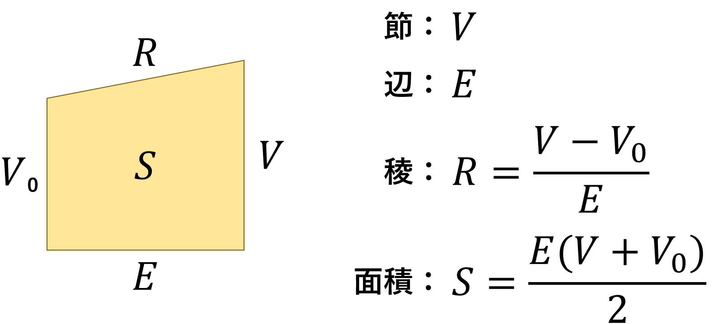
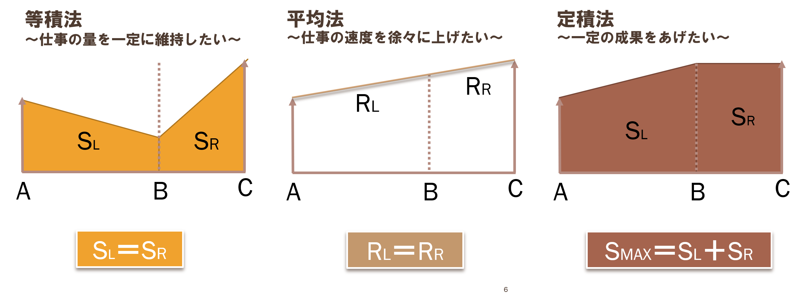
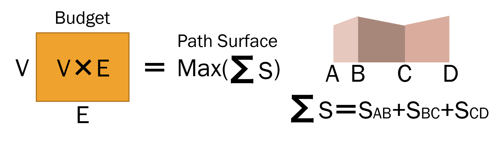
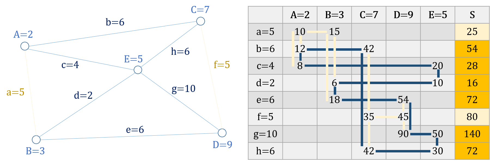
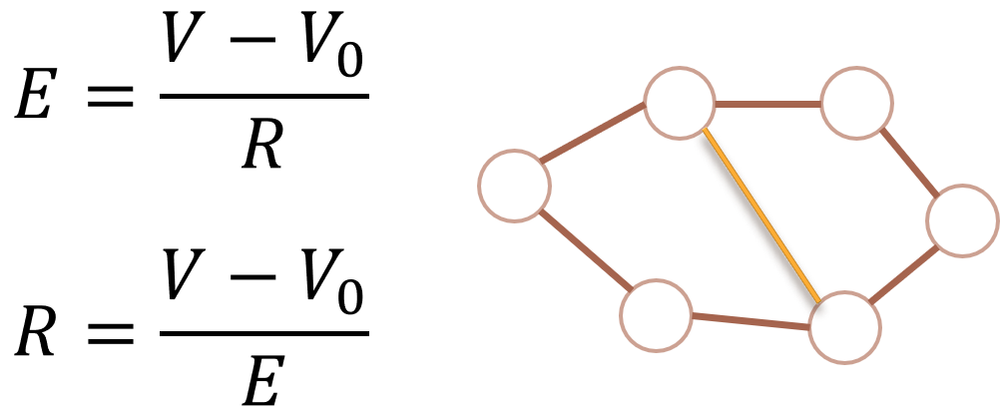

ポリゴングラフと人工知能
ポリゴングラフとは，節の値と辺の値から稜を計算し，ネットワークのペースを管理できるグラフである．ポリゴングラフでは，節，辺，稜，面積の4つを用いてモデルを作る．今回は，6つのモデルを通してポリゴングラフの有用性を紹介できればと思い筆を執る．
まず，稜とは傾きである．節と節との差を，節間の辺で割った値である．節から節へどれほどの速さで遷移したかを表す量である．節と節で挟まれた辺を三辺とする台形をとるとき，直角とは限らないほうの脚が稜である．
また，面積とは，その台形の面積である．ポリゴングラフの経路は常に面積の連続となる．その連続したパスの面積を経路面積，面積が連続したパスを面積経路と云ってもよい．こうして揃った，節，辺，稜，面積の4変数．ここからポリゴングラフは展開する．
ペース配分問題（進捗管理）
スタートとゴールが見えているとき，どうして計画通りに進まないかといえば，ペースを考慮していないからである．歩いていて信号が赤で止まる人は，赤になるまでの距離を計算せずに歩いている．ペースを弁えて歩く速さを調節すれば，赤信号で止まることはなくなる．物事のペースを管理すると，余計な渋滞や時間の損失を抑え，計画をよく制御して実行できる．
枝刈法（在庫管理）
稜と面積の積を用い，この値が基準より大きい/小さい辺から切断していく．稜と面積の積が大きい/小さい辺は，統計でいう外れ値に当たる．面が大きい/小さいだけでなく，傾きが大きい/小さいだけでもない，外れ値．こうした辺をカットし，他の節とのリンクをなくしていくことで，急な増減を示した節/変化の鈍い節を検出し，在庫やポートフォリオを容易に管理できる．
投網法（自動投資）
スタートの節と辺の積を「予算」としてまず入力する．その積は，スタートからどれほどの面積を伸ばせるかという量になる．その予算内で，どれだけの面積を伸ばすパスを選べるか決まる．スタートする節からいくつかのパスを選択し，予算に見合う面積経路を満たすパスを決定する．稜の小さいパスなら穏やかに，辺の大きいパスならゆっくりと，予算は満たされる．投資対象を選択すると目標投資額を達成する最適投資経路を探索できたりする．
メンガーのふるい（配分戦略）
すべての節を通るもっとも高い値を得られる経路を求めたい，といった条件に最適な経路を，グラフの上でなく表の上で計算して確実に求めることがきる．条件を臨機応変に細かく変更することも難しくない．工事中で通過できない辺は予め表に入れなければよいし，ほかにも「通過必須の辺」「節の通過はどの節も1回のみ」「辺の値の和が最大になる経路」といった条件でもメンガーのふるいで計算できる．
面付加問題（計画変更）
ポリゴングラフでは，節・辺・稜のうちひとつが分からなくても，他の２つの値から求めることができる．辺が分からなくても，節と稜が分かっていれば，辺を足せる．節の値と稜の値を設定することで，新規に面を追加できる．希望する辺と稜の値を設定することで新たな節を追加できる．既存のネットワークへ新規に要素を追加するとき，面を付加することで計算計画を変更できる．
霧中法（渋滞予測）

辺を進む速度は一定とは限らない．辺の途中で進みにくくなり遅れることもありうるから，辺の長さだけでは充分でない場合がある．そこで，辺に，長さのほか密度の値を設定すると，道濃度（辺の濃度）が距離（辺の長さ＝速さ×時間）と道密度（辺の密度）の積で表せる．道密度は特定の辺の混み具合を，また，道濃度は辺全体の混み具合を評価するとき便利である．道濃度は，面を付加する場合や辺を切断する際の判断材料となる．
人間の一生はあっという間，100年生きる未来の時代にあってもそうだろう．一生はただ苦労と悩みであり，速く過ぎ行き飛び去るのみだとモーセは云う．しかし，もう少し工夫し，ペースを調節できるなら，余計な苦悩から少しは解放されるだろう．早くても焦り，遅くても苛立つ私たちは，もし神さまのペースで物事を進められたら，怒ることの遅い神さまのように，もっと謙虚に過ごすことができるかもしれない．